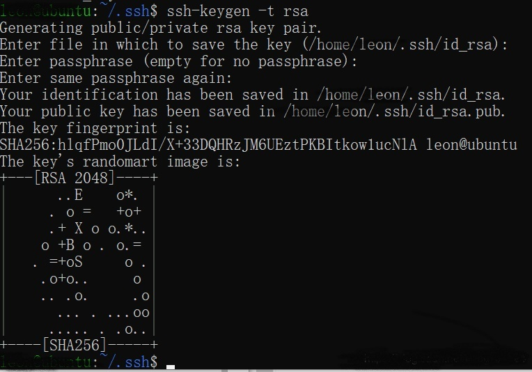
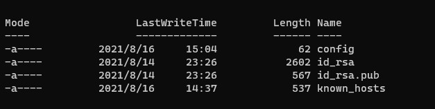
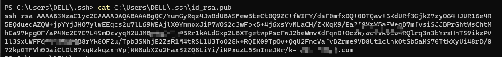
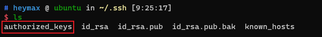
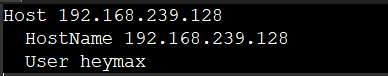
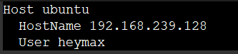

不骗你，真的很好用。
在Linux上安装SSH服务
可以先更新一下源
1
$ sudo apt-get update
安装SSH服务
1
$ sudo apt-get install openssh-server
检查SSH服务是否已经开启
1
$ ps -e |grep ssh
如果终端进程里有进程sshd，则说明已开启
1
2
3
4
5$ ps -e |grep ssh
817 ? 00:00:00 sshd
1574 ? 00:00:00 ssh-agent
2200 ? 00:00:00 sshd
2333 ? 00:00:00 sshd如果没有，可以手动开启
1
2
3$ sudo /etc/init.d/ssh restart
或
$ sudo /etc/init.d/ssh start如果你不知道Linux的IP是多少，可以执行
1
$ ifconfig
如果输入没有反应，或者提示安装，那么
1
$ sudo apt-get install net-tools
在Windows上安装服务
首先，安装 VSCode；
进入VSCode的扩展商店;
安装扩展 Remote - SSH。安装成功后，侧边栏会出现一个图标，远程资源管理器;
进入到远程资源管理器后，点击上边 + 号，弹出 Enter SSH Connection Command，输入远程的IP；
1
ssh <user-name>@<remote-host-ip>
接下来就是选择环境，输入密码，Enjoy。
你所配置的远程信息，将保存在config文件里，路径如下
1
C:\Users\YourUser\.ssh\config
1
2
3Host 192.168.2.xxx
HostName 192.168.2.xxx
User hero如何免密登录
在Windows客户端可以实现免输入密码即可登录远程的SSH服务器。使用的方法也很简单，在客户端中生成一对公钥，将公钥保存到服务器端的authorized_keys文件中即可。
1、客户端生成公钥
客户端生成公钥的方式跟GIT是一样的，如果你的客户端中已经配置了GIT，那可以直接使用已经生成的公钥即可。
生成公钥的指令为：1
$ ssh-keygen -t rsa
三次回车后看到以下内容，说明密钥生成成功。

公钥保存在 ~/.ssh/id_rsa.pub 中，查看文件夹，可以在 ~/.ssh/ 中看到以下内容。

其中，文件夹中有一个id_rsa，一个id_rsa.pub。
- id_rsa是本机的私钥，在使用ssh协议向其它主机传输数据前，主机会使用该私钥对数据进行加密；
- id_rsa.pub是本机的公钥，因为ssh协议采用非对称加密法（公钥可以用来解密使用私钥进行加密的数据，同样，私钥也可以用来解密公钥进行加密的数据），所以主机一般将该公钥放到其它需要远程登录到的主机的ssh服务器中。
使用命令可以查看当前的公钥：
1 | $ cat ~/.ssh/id_rsa.pub |
终端会显示一段类似于下图的内容：
至此，客户端密钥生成完成。
2、服务器中添加客户端密钥
服务器中，有一个文件 authorized_keys 用来存储客户端的密钥。authorized_keys默认它是不存在的。它存放在~/.ssh/文件夹下。
如果你的Ubuntu上还没生成过ssh的密钥，那是没有 **.ssh/ **文件夹的，需要手动创建。
1 | $ mkdir ~/.ssh |
需要注意的一点是，.ssh的文件夹权限是700，而authorized_keys和私钥的权限都是600。生成authorized_keys时需要注意其权限，否则设置的客户端密钥会无法生效。

1、最简单的方式添加密钥
使用最简单的方式添加密钥，复制粘贴即可。
复制刚才客户端中得到的密钥，然后在服务器端中生成 authorized_keys ，粘贴进去，OK搞定。
2、使用命令
而如果你的客户端也是Linux系统，那么你可以在终端中，那么你可以在终端执行：
1 | $ ssh-copy-id <服务端用户名>@<IP> |
3、手动插入
你也可以将客户端生成的密钥文件 id_rsa.pub 先上传至服务器中，然后再使用命令新建并插入到 authorized_keys 文件中。
1 | $ cat ./id_rsa.pub >> ~/.ssh/authorized_keys |
重启服务器端的ssh服务，完成。
1 | $ sudo service ssh restart |
解决一个繁琐的问题
上面解决了每次登录SSH都要输入密码的问题，所以你可以使用命令登录服务器，不是再输入密码了。
1 | $ ssh heymax@192.168.239.128 |
你会每次都记住服务器的IP吗？
那显然是个很累的事情。
打开ssh的配置文件 \config，其目录在 ~/.ssh/config， Windows在 C:\Users\DELL\.ssh\config 下。
配置文件的默认是这样的：

修改Host为ubuntu，当然，你想怎么写都行。

保存退出，试试新的登录命令：
1 | $ ssh heymax@ubuntu |
问题与解决方法
- Post title：通过vscode Remote-SSH开发Linux
- Post author：Jimmy
- Create time：2021-10-03 00:37:01
- Post link：https://www.gogojimmy.top/2021/10/03/通过vscode Remote-SSH开发Linux/
- Copyright Notice：All articles in this blog are licensed under BY-NC-SA unless stating additionally.